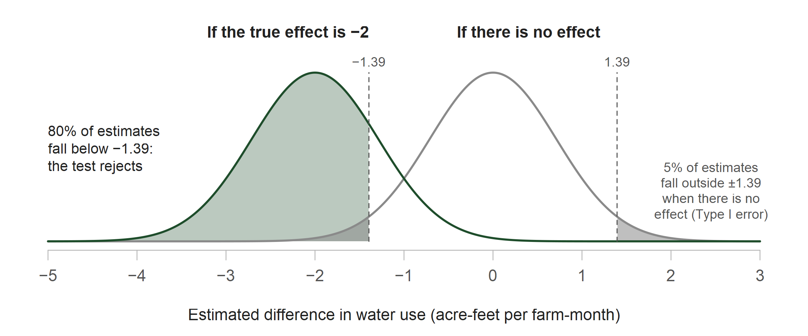

Starr on qualitative and mixed methods (Starr 2014)
Readings and course handouts are available on Canvas
Methods covered in Unit 6
6.1 Used reduced-form comparisons and developed an estimating equation and identifying assumption from a research question
6.2 Estimated structural parameters from a model of behavior and used the model to examine counterfactuals
6.3 Used machine learning for prediction and within other empirical analyses
6.4 covers experiments, qualitative and mixed methods, and the measurement and statistical decisions that support a conclusion
Our hypothetical example
Setting: Irrigation districts deliver surface water to member farms. In a drought year, the districts cut allocations and want farms to use less water without building new infrastructure
Problem: Farms see their water use on a seasonal bill, after most irrigation decisions are made
Proposed program: Mail each farm a monthly report of its water use, compared with similar farms nearby. Producing and mailing the reports costs the districts money
Policy question: Does offering farms a monthly water-use report reduce irrigation water use enough to justify its cost?
Related evidence on feedback reports: Allcott (2011) on household electricity use; Ferraro and Price (2013) on residential water use
Following the example through the lecture
Choose a design: Which method fits the districts’ question? Field and lab experiments, interviews, and mixed methods
Are we estimating the right thing? Which farms and which measure of water use? (Gibson)
Plan the sample: How many completed surveys does the study need? (Kim)
Interpret the results: What do the data support once they arrive? (Kim)
All numbers are hypothetical
Choose a design
Quantitative and qualitative evidence
Approach
Evidence
Research use
Quantitative
Numerical measures from surveys, records, or experiments
Estimate patterns, effects, parameters, or predictions
Qualitative
Interviews, field observations, or documents
Document decisions and the processes that produce them
Mixed methods
Numerical and qualitative evidence
Examine a question using measured outcomes and accounts of decisions
Select a method to match the research task
Research task
Evidence or method
Estimate a policy effect
Random assignment or an observational comparison with a stated identifying assumption
Estimate preferences
Choice data and a model of consumer or producer behavior
Predict a future outcome
A prediction rule evaluated with held-out observations
Document a decision process
Interviews, fieldwork, or case studies
Test a response to an incentive
A field or lab experiment
Field experiment (1/3)
The districts control who receives the report, so they can randomly assign the offer
Design element
Hypothetical study
Eligible farms
Farms on the districts’ customer lists
Assignment
Random offer of the report at the farm level
Outcome
Total monthly water use in acre-feet per farm-month, collected in a follow-up survey
Effect of interest
A reduction of 2 acre-feet per farm-month would justify the cost of the program
Field experiment (2/3)
Assign eligible farms to the offer or comparison group
Survey both groups about subsequent monthly water use
Compare group means to estimate the effect of being offered the report
Document report delivery, survey response, and departures from assignment
The estimate applies to the offer among farms included in the experiment
Extrapolation to other districts or a mandatory reporting program requires evidence about those settings (i.e., generalizability)
Field experiment (3/3)
The analysis subtracts mean water use in the comparison group from mean water use in the group offered the report
A negative indicates lower reported use among farms offered the report. With comparable follow-up in both assigned groups, the difference estimates the effect of the offer
Before computing , the team must decide what it measures, for which farms, and how many completed surveys it requires
Lab experiments
Falk and Heckman’s gift-exchange experiment examines whether workers respond to higher wages with higher effort
Participants act as firms or workers
A firm offers a wage; a worker who accepts chooses an effort level that is costly to provide
The experiment specifies the available choices, minimum effort, and payoff rules
What the lab adds: Control over choices, information, and payoffs, so researchers can vary one feature at a time and replicate the design
What it leaves out: The field setting and the population named in the policy question. Falk and Heckman argue that generalizability is a question for any single study, lab or field
Source: Falk and Heckman (2009), discussion of the gift-exchange experiment
Interviews
Research use: Interviews can document whether farms received and understood the report, how they used it, and which irrigation changes were feasible
Study procedures
Recruit across farm size, crop, water rights, and location
Document the interview guide and follow-up questions
Describe recording, transcription, and coding
Examine accounts that challenge the proposed explanation
Reporting: State the recruitment criteria and evidence for each interpretation
Included: Farms served by participating districts appear on the customer lists
Possibly excluded: Farms relying entirely on private wells or other suppliers may be absent
Population claim: An estimate for farms on the lists requires additional evidence before applying it to all farms in the region
Gibson’s distinction between registered and resident households illustrates how a data source can omit members of the population named in the research question
The outcome of interest is total irrigation water use. Suppose instead the follow-up survey asked only about district deliveries. That question records one source of water and omits withdrawals from private wells
If farms substitute groundwater for district water after receiving the report, district deliveries could decline while total water use remains unchanged
Gibson’s food example makes the same point: one week’s purchases omit food consumed from household stocks
Source: Gibson (2019), discussion of food purchases and consumption
Plan the sample
What would justify a claim of an effect?
Test level (α): The chance of rejecting no effect when there is no effect. Choosing α = 0.05 sets the Type I error rate at 5%
Power (1 − β): The chance of rejecting no effect when a 2-unit reduction is present. Collecting more outcomes raises power and lowers the Type II error rate β
Confidence interval: Show which effect sizes are consistent with the observed difference
Response check: Compare response across assigned groups to test whether missing surveys change the comparison
The test level and power target are set before data collection. The confidence interval and response check are reported after
False positives, false negatives, and power
Test the null hypothesis of no effect of the offer against a specified alternative: the districts’ threshold of a 2 acre-foot reduction per farm-month
Decision
No effect is present
A 2-unit reduction is present
Reject no effect
False positive (Type I error)
Detect the reduction
Do not reject
Correct non-rejection
False negative (Type II error)
At α = 0.05, if the report has no effect, the test wrongly rejects in 5% of repeated studies. With 80% power, if the true effect is a 2-unit reduction, the test rejects in 80% of repeated studies (β = 0.20)
For a survey that describes average water use, choose a sample size based on the desired precision of the estimated mean
For the report experiment, choose a sample size that can detect a specified difference between assigned groups. That calculation uses the effect size, variation in water use, test level, and power target
The districts set the effect of interest during the design: a reduction of 2 acre-feet per farm-month would justify the cost of the report program
An 80% power target is a common planning convention. If the true effect is a 2-unit reduction, the planned study would detect it in about four out of five repetitions under the assumed design. A 90% target would require more completed observations
Both choices come from the policy question and the feasible sample size, and both are fixed before any outcomes are observed. An effect size chosen after seeing an estimate no longer describes what the study was designed to detect
With a 2-unit effect, standard deviation of 8, and a two-sided 5% test, an approximate two-group calculation is
Base R’s two-sample calculation gives 252.13, so the study plans for 253 completed surveys per group
Illustrative calculation: power.t.test(delta = 2, sd = 8, sig.level = .05, power = .80, type = "two.sample")
Why 253 surveys per group give 80% power

With 253 farms per group, the standard error of the difference is 0.71. The test rejects when the estimate falls below −1.39 or above 1.39 (1.96 × 0.71)
Illustrative calculation. A simulation of 10,000 repeated experiments rejects in 80.5% of runs when the true effect is −2 and in 5.0% when there is no effect
Planning the survey contacts
The power calculation gives the number of observed outcomes needed: 253 farms per group. Because the outcome comes from a follow-up survey, the team must invite more farms than that
Suppose a pilot with similar farms suggests a 40% response rate
The team would invite 633 farms in each group (1,266 in total). This calculation checks whether the customer lists and fieldwork budget can supply the planned number of completed outcomes
The 40% response rate is an illustrative pilot assumption, not a general benchmark
What reviewers examine in a power calculation
There is no single power cutoff for every study. Reviewers examine the basis for the calculation
Why the specified effect size matters for the research or policy question
How the assumed variation in water use was estimated
Whether the calculation reflects assignment, clustering, and expected survey response
Whether the eligible farm lists can produce the required completed sample
After data collection, report the realized sample and the precision of the estimated effect
The districts may also want to know whether the report changes irrigation scheduling and crop choice. Testing three outcomes creates three opportunities to reject a true null hypothesis
If the three tests were independent and each used a 5% level, the chance of at least one false positive would be
The outcomes may be correlated, so this value is illustrative. Before analysis, identify the primary outcome, then report all tested outcomes and explain any adjustment for multiple comparisons
Source: Kim (2019), discussion of multiple testing
Interpret the results
Random variation and survey response
Farms were randomly assigned to the report or comparison group. The follow-up survey records water use only for farms that respond. Before interpreting the difference between groups, ask
Random variation: Could another assignment produce a different group difference? A confidence interval or test quantifies this uncertainty
Selective response: Do respondents differ from farms that did not answer? Compare response rates and available farm characteristics by assigned group
If survey response is 8%
At the planned 40% response rate, 633 invitations would yield about 253 completed surveys per group and 80% power under the stated assumptions
Suppose the realized response rate is 8%. The same invitations yield about 51 completed surveys per group, and power to detect the 2-unit effect falls to about 24%
To obtain 253 completions at an 8% rate, the team would need about 3,163 invitations per group. The customer lists may contain fewer eligible farms
Illustrative calculation: R power.t.test(n = 51, delta = 2, sd = 8, sig.level = .05, type = "two.sample")
Nonresponse and interpretation
There is no universal expected response rate. Use a pilot or comparable survey to plan invitations. An 8% rate calls for evidence about who responded
Compare respondents with the customer lists on available farm characteristics
Report response rates separately for the offer and comparison groups
Examine whether follow-up or weighting changes the estimate
Selective response can bias the estimated effect if it changes the comparability of the assigned groups. A larger invitation list alone does not resolve that concern
With about 51 farms per group, suppose the estimate is acre-feet per farm-month and the standard deviation is 8 in each group. The approximate standard error is
An approximate 95% interval is −1.5 ± 1.96(1.58) = [−4.6, 1.6] acre-feet. The data remain compatible with no effect and with reductions larger than the 2-unit threshold set during planning
The small completed sample explains both the fall to 24% power and the wide interval. The interval describes sampling uncertainty among respondents; it does not address selective response
Why consider an equivalence test?
The estimate is not statistically distinguishable from zero, and the districts are considering ending the report program
The 95% interval [−4.6, 1.6] still includes reductions greater than 2 acre-feet. The study has not ruled out a benefit large enough to justify the program
To support a claim that the effect is negligible, the team must specify what size of change would matter and test whether the data rule out effects that large
Students who did not receive feedback on Tuesday can report their current methods plan
References
Falk, Armin, and James J. Heckman. 2009. “Lab Experiments Are a Major Source of Knowledge in the Social Sciences.”Science 326 (5952): 535–38. https://doi.org/10.1126/science.1168244.
Gibson, John. 2019. “Are You Estimating the Right Thing? An Editor Reflects.”Applied Economic Perspectives and Policy 41 (3): 329–50. https://doi.org/10.1093/aepp/ppz009.
Kim, Jae H. 2019. “Tackling False Positives in Business Research: A Statistical Toolbox with Applications.”Journal of Economic Surveys 33 (3): 862–95. https://doi.org/10.1111/joes.12303.
Starr, Martha A. 2014. “Qualitative and Mixed-Methods Research in Economics: Surprising Growth, Promising Future.”Journal of Economic Surveys 28 (2): 238–64. https://doi.org/10.1111/joes.12004.